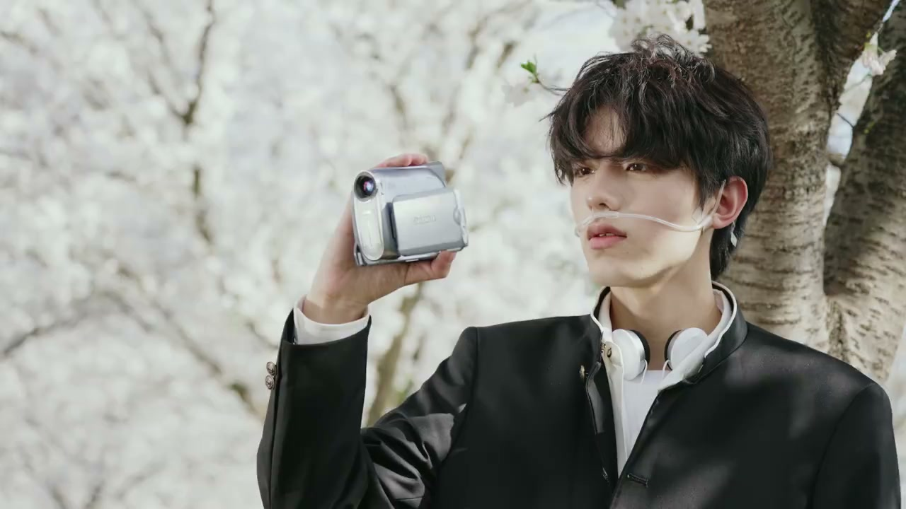
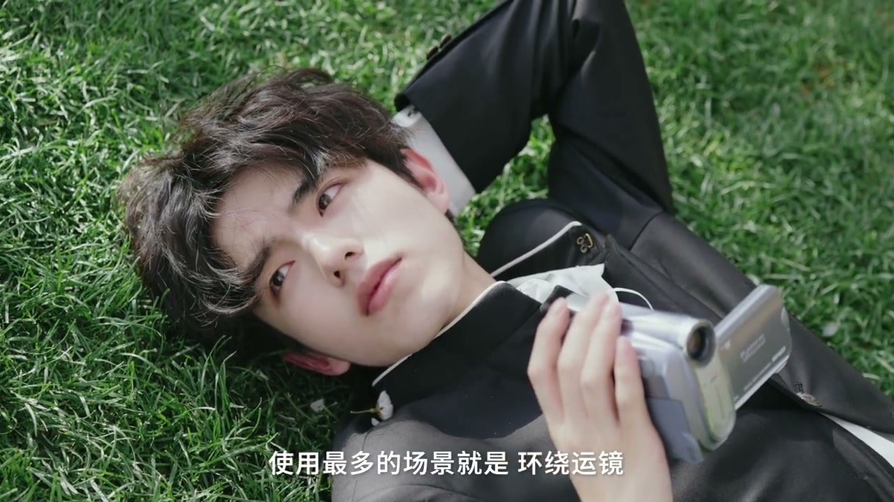
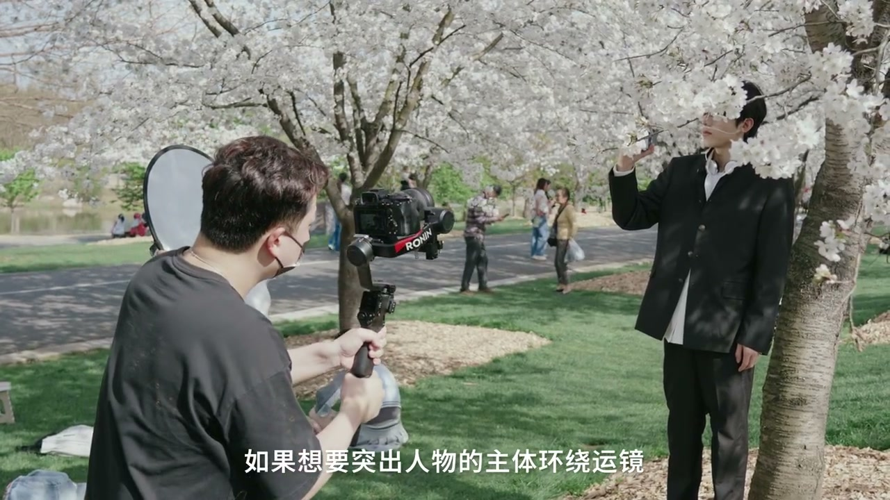

01
中文
看完这期视频，教你分清稳定器两大模式。
EN
After this video, you'll tell apart the two gimbal modes.
表达提示two gimbal modes（两大模式）

Scene English · 器材 · 稳定器模式
Beginner Tips: Tell Apart Two Gimbal Modes in 1 Minute
🎧 语音讲解
Pan-Follow Mode
情境平移跟随（PF）是大家最常用的稳定器模式，只进行左右方向的平移移动。
看完这期视频，教你分清稳定器两大模式。
After this video, you'll tell apart the two gimbal modes.
表达提示two gimbal modes（两大模式）
平移跟随是大家最常用到的稳定器模式。
Pan-follow (PF) is the most commonly used gimbal mode.
表达提示pan-follow（平移跟随）
在这个模式下，稳定器只会进行左右方向的平移移动。
In this mode, the gimbal only pans left and right.
表达提示only pans（只平移）
使用最多的场景就是环绕运镜，也就是我们熟知的刷锅。
It's used most for orbit moves—what we call panning around.
表达提示orbit move（环绕运镜）
two gimbal modes（两大模式
pan-follow（平移跟随

Using PF Mode
情境小范围轻微环绕或整体环绕都可以用PF；运镜更多交代环境，突出主体可搭配长焦。
不管是小范围的轻微环绕，还是环绕主体的整体运镜，都可以用到PF模式。
Both gentle partial orbits and full subject orbits work in PF mode.
表达提示gentle orbit（轻微环绕）
这样的运镜更多的起到交代周围环境的作用。
This move mostly establishes the surroundings.
表达提示establish surroundings（交代环境）
展现出人物所在的场景内容。
It reveals the scene the person is in.
表达提示reveal the scene（展现场景）
如果想要突出人物主体的环绕运镜，也可以搭配长焦镜头进行拍摄。
To emphasize the subject with an orbit, pair it with a telephoto lens.
表达提示telephoto lens（长焦镜头）
空间压缩感会更强。
The spatial compression becomes stronger.
表达提示spatial compression（空间压缩）
gentle orbit（轻微环绕
reveal the scene（展现场景

Compared with Lock Mode
情境平移跟随比锁定模式展示更多环境内容，是定点的横向运镜。
和之前提到的锁定模式不同，平移跟随之下的效果更多的是一个定点的横向运镜。
Unlike lock mode, PF gives a fixed-point lateral move.
表达提示fixed-point lateral（定点横向运镜）
比起锁定模式，可以展示更多的环境内容。
Compared with lock, it shows more of the environment.
表达提示more environment（更多环境）
如果画面是运动状态的展示，就用锁定模式。
For moving-action shots, use lock mode.
表达提示lock mode（锁定模式）
如果画面重点是周围环境的展示，就选平移跟随模式。
If the focus is the surroundings, choose pan-follow.
表达提示choose pan-follow（选平移跟随）
more environment（更多环境
lock mode（锁定模式
说平移跟随
说刷锅环绕
说长焦配合
说与锁定对比
说模式选择
PF只平移。
运动状态用锁定。
压缩感靠长焦。
按目的选模式。
交代环境选PF。